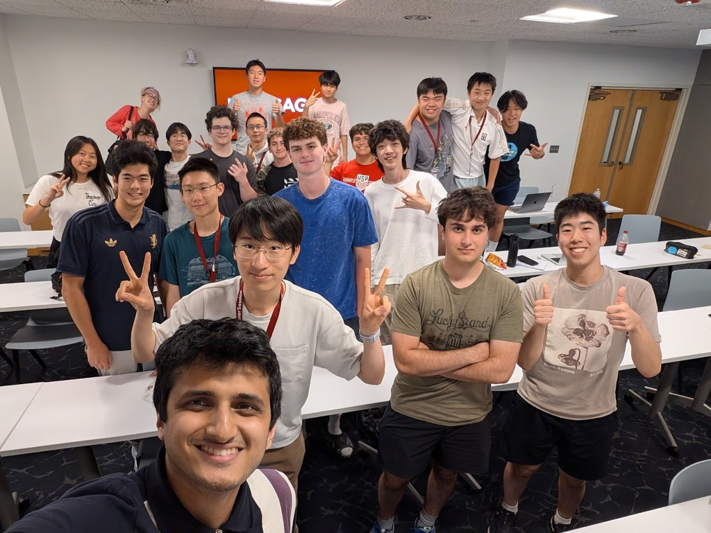

About This Program
I attended the University of Chicago's Quantum Computing: An Introduction program, an interdisciplinary course connecting physics, computer science, and quantum information.
The program built intuition for the quantum phenomena that make quantum computing possible, including superposition and entanglement, while also examining their practical benefits and limitations. We worked with vector notation, tensor products for combining gate states, and matrix representations of quantum states and gate operations.
Through hands-on work with Qiskit, I learned how to build and measure basic quantum circuits. We also studied introductory quantum algorithms, including Bernstein-Vazirani and the Archimedes algorithm.
Course Link
Quantum Computing: An Introduction at UChicago Summer Session
Screenshots & Photos
